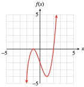
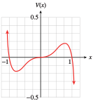
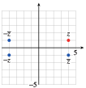
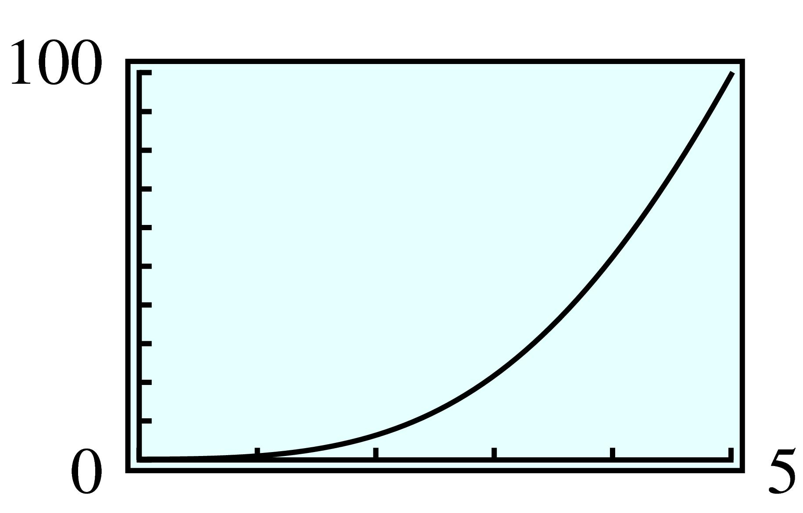
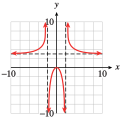
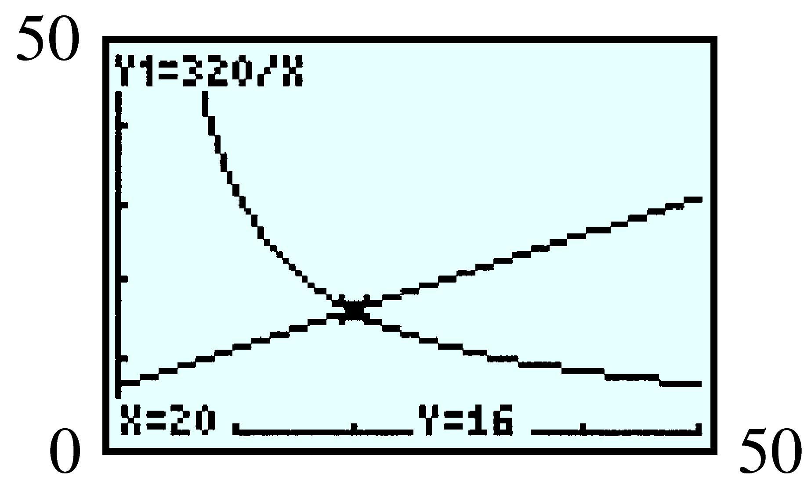

Section 7.6 Chapter Summary and Review
¶Subsection 7.6.1 Key Concepts
The degree of a product of nonzero polynomials is the sum of the degrees of the factors.
Cube of a Binomial.
- \(\displaystyle (x + y)^3 = x^3 + 3x^2y + 3xy^2 + y^3\)
- \(\displaystyle (x - y)^3 = x^3 - 3x^2y + 3xy^2 - y^3\)
Factoring the Sum or Difference of Two Cubes.
\(x^3 + y^3 = (x + y)(x^2 - xy + y^2)\)
\(x^3 - y^3 = (x - y)(x^2 + xy + y^2)\)
The graphs of all polynomials are smooth curves without breaks or holes.
The graph of a polynomial of degree \(n\) (with positive lead coefficient) has the same long-term behavior as the power function of the same degree.
Factor Theorem.
Let \(P(x)\) be a polynomial with real number coefficients. Then \((x - a)\) is a factor of \(P(x)\) if and only if \(P(a) = 0\text{.}\)
A polynomial of degree \(n\) can have at most \(n\) \(x\)-intercepts.
At a zero of multiplicity \(2\text{,}\) the graph of a polynomial has a turning point. At a zero of multiplicity \(3\text{,}\) the graph of a polynomial has an inflection point.
The square root of a negative number is an imaginary number.
A complex number is the sum of a real number and an imaginary number.
We can perform the four arithmetic operations on complex numbers
The product of a nonzero complex number and its conjugate is always a positive real number.
Fundamental Theorem of Algebra.
Let \(p(x)\) be a polynomial of degree \(n\ge 1\text{.}\) Then \(p(x)\) has exactly \(n\) complex zeros.
We can graph complex numbers in the complex plane
Multiplying a complex number by \(i\) rotates its graph by \(90\degree\) around the origin.
Rational Function.
A rational function is one of the form
\begin{equation*} f (x) =\frac{P(x)}{Q(x)} \end{equation*}where \(P(x)\) and \(Q(x)\) are polynomials and \(Q(x)\) is not the zero polynomial.
A rational function \(f (x) = \dfrac{P(x)}{Q(x)}\) is undefined for any value \(x=a\) where \(Q(a) = 0\text{.}\) These \(x\)-values are not in the domain of the function.
Vertical Asymptotes.
If \(Q(a) = 0\) but \(P(a) \ne 0\text{,}\) then the graph of the rational function \(f(x) = \displaystyle{\frac{P(x)}{Q(x)}}\) has a vertical asymptote at \(x=a\text{.}\)
Horizontal Asymptotes.
Suppose \(f(x) = \displaystyle{\frac{P(x)}{Q(x)}}\) is a rational function, where the degree of \(P(x)\) is \(m\) and the degree of \(Q(x)\) is \(n\text{.}\)
If \(m\lt n\text{,}\) the graph of \(f\) has a horizontal asymptote at \(y=0\text{.}\)
If \(m = n\text{,}\) the graph of \(f\) has a horizontal asymptote at \(y = \dfrac{a}{b}\text{,}\) where \(a\) is the lead coefficient of \(P(x)\) and \(b\) is the lead coefficient of \(Q(x)\text{.}\)
If \(m\gt n\text{,}\) the graph of \(f\) does not have a horizontal asymptote.
To solve an equation involving an algebraic fraction, we multiply each side of the equation by the denominator of the fraction. This has the effect of clearing the fraction, giving us an equivalent equation without fractions.
Whenever we multiply an equation by an expression containing the variable, we should check that the solutions obtained are not extraneous.
.
Exercises 7.6.2 Chapter 7 Review Problems
¶For Problems 1–4, multiply.
For Problems 5–8, find the indicated term.
For Problems 9–12, factor.
For Problems 13–14, write as a polynomial.
13.
\((v - 10)^3\)
\(v^3 - 30v^2 + 300v - 1000\)
14.
\((a + 2b^2)^3\)
15.
The expression \(\dfrac{n}{6 }(n - 1)(n - 2)\) gives the number of different \(3\)-item pizzas that can be created from a list of \(n\) toppings.
Write the expression as a polynomial.
If Mitch's Pizza offers \(12\) different toppings, how many different combinations for \(3\)-item pizzas can be made?
Use a table or graph to determine how many different toppings are needed in order to be able to have more than \(1000\) possible combinations for \(3\)-item pizzas.
\(\dfrac{1}{6}n^3-\dfrac{1}{2}n^2+\dfrac{1}{3}n \)
\(220\)
\(20\)
16.
The expression \(n(n - 1)(n - 2)\) gives the number of different triple-scoop ice cream cones that can be created from a list of \(n\) flavors.
Write the expression as a polynomial.
If Zanner's Ice Cream Parlor offers \(21\) flavors, how many different triple-scoop ice cream cones can be made?
Use a table or graph to determine how many different flavors are needed in order to be able to have more than \(10,000\) possible triple-scoop ice cream cones.
For Problems 17–18,
Graph each polynomial in the standard window.
Find the range of the function on the domain \([-10, 10]\text{.}\)
17.
\(f (x) = x^3 - 3x + 2\)

\([-968, 972]\)
18.
\(g(x) = -0.1(x^4 - 6x^3 + x^2 + 24x + 16)\)
For Problems 19–28,
Find the zeros of the polynomial.
Sketch the graph by hand.
19.
\(f (x) = (x - 2)(x + 1)^2\)
\(2, -1\)
- 
20.
\(g(x) = (x - 3)^2(x + 2)\)
21.
\(G(x) = x^2(x - 1)(x + 3)\)
\(0,1, -3\)

22.
\(F(x) = (x + 1)^2(x - 2)^2\)
23.
\(V(x) = x^3 - x^5\)
\(0,1, -1\)
- 
24.
\(H(x) = x^4 - 9x^2\)
25.
\(P(x) = x^3 + x^2 - x - 1\)
\(-1, 1\)

26.
\(y = x^3 + x^2 - 2x\)
27.
\(y = x^4 - 7x^2 + 6\)
\(-1, 1, \pm\sqrt{6} \)

28.
\(y = x^4 + x^3 - 3x^2 - 3x\)
For Problems 29–34, find a possible formula for the polynomial, in factored form.


For Problems 35–36,
Verify that the given value is a zero of the polynomial.
Find the other zeros. (Hint: Use polynomial division to write \(P(x) = (x - a)Q(x)\text{,}\) then factor \(Q(x)\text{.}\))
35.
\(P(x) = x^3 - x^2 - 7x - 2\text{;}\) \(a=-2\)
\(P(-2) = 0\)
\(\dfrac{3\pm\sqrt{13}}{2} \)
36.
\(P(x) = 3x^3 - 11x^2 - 5x + 4\text{;}\) \(a=4\)
For Problems 37–40,
Solve the quadratic equation, and write the solutions in the form \(a + bi\text{.}\)
Check your solutions.
For Problems 41–42, evaluate the polynomial for the given values of the variable.
41.
\(z^2 - 6z + 5\)
\(z = 3 + 2i\)
\(z=3-2i\)
\(-8\)
\(-8\)
42.
\(w^2 + 4w + 7\)
\(w= -1 - 3i\)
\(w = -1 + 3i\)
For Problems 43–44, find the quotient.
43.
\(\dfrac{2-5i}{3-i} \)
\(\dfrac{11}{10}-\dfrac{13}{10}i \)
44.
\(\dfrac{1+i}{1-i} \)
For Problems 45–46, find a fourth-degree polynomial with the given zeros.
45.
\(3i, ~ 1-2i\)
\(x^4 - 2x^3 + 14x^2 - 18x + 45\)
46.
\(2-\sqrt{3} ,~ 2+3i\)
For Problems 45–46, plot each complex number as a point on the complex plane.
47.
\(z = 4 + i, ~\overline{z}, ~{-z}, ~{-\overline{z}}\)
\(iz, ~i\overline{z}, ~{-iz}, ~{-i\overline{z}}\)
- 

48.
\(w = -2 + 3i, ~\overline{w}, ~{-w}, ~{-\overline{w}}\)
\(iw, ~i\overline{w}, ~{-iw}, ~{-i\overline{w}}\)
49.
The radius, \(r\text{,}\) of a cylindrical can should be one-half its height, \(h\text{.}\)
Express the volume, \(V\text{,}\) of the can as a function of its height.
What is the volume of the can if its height is \(2\) centimeters? \(4\) centimeters?
Graph the volume as a function of the height and verify your results of part (b) graphically. What is the approximate height of the can if its volume is \(100\) cubic centimeters?
\(V=\dfrac{\pi h^3}{4} \)
\(2\pi\text{ cm}^3 \approx 6.28\text{ cm}^3 \text{;}\) \(16\pi\text{ cm}^3 \approx 50.27\text{ cm}^3 \)
- 
50.
The Twisty-Freez machine dispenses soft ice cream in a cone-shaped peak with a height \(3\) times the radius of its base. The ice cream comes in a round bowl with base diameter \(d\text{.}\)
Express the volume, \(V\text{,}\) of Twisty-Freez in the bowl as a function of \(d\text{.}\)
How much Twisty-Freez comes in a \(3\)-inch diameter dish? A \(4\)-inch dish?
Graph the volume as a function of the diameter and verify your results of part (b) graphically. What is the approximate diameter of a Twisty-Freez if its volume is \(5\) cubic inches?
51.
A new health club opened up, and the manager kept track of the number of active members over its first few months of operation. The equation below gives the number, \(N\text{,}\) of active members, in hundreds, \(t\) months after the club opened.
Use your calculator to graph the function \(N\) on a suitable domain.
How many active members did the club have after \(8\) months?
In which months did the club have \(200\) active members?
When does the health club have the largest number of active members? What happens to the number of active members as time goes on?

\(338\)
Months \(2\) and \(20\)
During month \(6\text{.}\) The number of members eventually decreases to zero.
52.
A small lake in a state park has become polluted by runoff from a factory upstream. The cost for removing \(p\) percent of the pollution from the lake is given, in thousands of dollars, by
Use your calculator to graph the function \(C\) on a suitable domain.
How much will it cost to remove \(40\%\) of the pollution?
How much of the pollution can be removed for \(\$100,000\text{?}\)
What happens to the cost as the amount of pollution to be removed increases? How much will it cost to remove all the pollution?
For Problems 53–54, state the domain of the function.
53.
\(h(x)=\dfrac{x^2-9}{x(x^2-4)} \)
All numbers except \(-2, 0, 2\text{.}\)
54.
\(f(x)=\dfrac{x^2-3x+10}{x^2(x^2+1)} \)
For Problems 55–56,
Sketch the horizontal and vertical asymptotes for each function.
Use the asymptotes to help you sketch the graph.
55.
\(F(x)=\dfrac{2x}{x^2-1} \)

56.
\(G(x)=\dfrac{2}{x^2-1} \)
For Problems 57–62,
Identify all asymptotes and intercepts.
Sketch the graph.
57.
\(y=\dfrac{1}{x-4} \)
Horizontal asymptote \(y = 0\text{;}\) Vertical asymptote \(x = 4\text{;}\) \(y\)-intercept \((0,\frac{-1}{4} )\)

58.
\(y=\dfrac{2}{x^2-3x-10} \)
59.
\(y=\dfrac{x-2}{x+3} \)
Horizontal asymptote \(y = 1\text{;}\) Vertical asymptote \(x = -3\text{;}\) \(x\)-intercept \((2,0)\text{;}\) \(y\)-intercept \((0,\frac{-2}{3} )\)

60.
\(y=\dfrac{x-1}{x^2-2x-3} \)
61.
\(y=\dfrac{3x^2}{x^2-4} \)
Horizontal asymptote \(y = 3\text{;}\) Vertical asymptote \(x = \pm 2\text{;}\) \(x\)-intercept \((0,0)\text{;}\) \(y\)-intercept \((0,0 )\)
- 
62.
\(y=\dfrac{2x^2-2}{x^2-9} \)
For Problems 63–66,
Use polynomial division to write the fraction in the form \(y=\dfrac{k}{p(x)}+c \text{,}\) where \(k\) and \(c\) are constants.
Use transformations to sketch the graph.

67.
The Explorer's Club is planning a canoe trip to travel \(90\) miles up the Lazy River and return in \(4\) days. Club members plan to paddle for \(6\) hours each day, and they know that the current in the Lazy River is \(2\) miles per hour.
Express the time it will take for the upstream journey as a function of their paddling speed in still water.
Express the time it will take for the downstream journey as a function of their paddling speed in still water.
Graph the sum of the two functions and find the point on the graph with \(y\)-coordinate \(24\text{.}\) Interpret the coordinates of the point in the context of the problem.
The Explorer's Club would like to know what average paddling speed members must maintain in order to complete their trip in \(4\) days. Write an equation to describe this situation.
Solve your equation to find the required paddling speed.
\(t_1=\dfrac{90}{v-2} \)
\(t_2=\dfrac{90}{v+2} \)

\(\dfrac{90}{v-2}+\dfrac{90}{v+2}=24 \)
\(8\) mph
68.
Pam lives on the banks of the Cedar River and makes frequent trips in her outboard motorboat. The boat travels at \(20\) miles per hour in still water.
Express the time it takes Pam to travel \(8\) miles upstream to the gas station as a function of the speed of the current.
Express the time it takes Pam to travel \(12\) miles downstream to Marie's house as a function of the speed of the current.
Graph the two functions in the same window, then find the coordinates of the intersection point. Interpret those coordinates in the context of the problem.
Pam traveled to the gas station in the same time it took her to travel to Marie's house. Write an equation to describe this situation.
Solve your equation to find the speed of the current in the Cedar River.
69.
Mikala sells \(\dfrac{320}{x} \) bottles of bath oil per week if she charges \(x\) dollars per bottle. Her supplier can manufacture \(\dfrac{1}{2}x+6\) bottles per week if she sells it at \(x\) dollars per bottle.
Graph the demand function, \(D(x) = \dfrac{320}{x}\text{,}\) and the supply function, \(S(x) = \dfrac{1}{2}x+6\text{,}\) in the same window.
Write and solve an equation to find the equilibrium price, that is, the price at which the supply equals the demand for bath oil. Label this point on your graph.
- 
\(\dfrac{320}{x}=\dfrac{1}{2}x+6~\text{;}\) $\(20\)
70.
Tomoko sells \(\dfrac{4800}{x} \) exercise machines each month if the price of a machine is \(x\) dollars. On the other hand, her supplier can manufacture \(2.5x+20\) machines if she charges \(x\) dollars apiece for them.
Graph the demand function, \(D(x) = \dfrac{4800}{x}\text{,}\) and the supply function, \(S(x) = 2.5x+20\text{,}\) in the same window.
Write and solve an equation to find the equilibrium price, that is, the price at which the supply equals the demand for exercise machines. Label this point on your graph.
For Problems 71–72, write and solve a proportion.
71.
A polling firm finds that \(78\) of the \(300\) randomly selected students at Citrus College play some musical instrument. Based on the poll, how many of the college’s \(1150\) students play a musical instrument?
\(299\)
72.
Claire wants to make a scale model of Salem College. The largest building on campus, Lausanne Hall, is \(60\) feet tall, and her model of Lausanne Hall will be \(8\) inches tall. How tall should she make the model of Willamette Hall, which is \(48\) feet tall?
For Problems 73–80, solve.
73.
\(\dfrac{y+3}{y+5}=\dfrac{1}{3} \)
\(-2\)
74.
\(\dfrac{z^2+2}{z^2-2}=3 \)
75.
\(\dfrac{x}{x-2}=\dfrac{2}{x-2}+7 \)
No solution
76.
\(\dfrac{3x}{x+1}-\dfrac{2}{x^2+x} =\dfrac{4}{x} \)
77.
\(\dfrac{2}{a+1}+\dfrac{1}{a-1} =\dfrac{3a-1}{a^2-1} \)
All \(a\) except \(-1\) and \(1\)
78.
\(\dfrac{2b-1}{b^2+2b}=\dfrac{4}{b+2} -\dfrac{1}{b} \)
79.
\(\dfrac{-10}{u-2} = \dfrac{u-4}{u^2-u-2} + \dfrac{3}{u+1} \)
\(0\)
80.
\(\dfrac{1}{t^2+t} + \dfrac{1}{t} = \dfrac{3}{t+1} \)
For Problems 81–84, solve for the indicated variable.